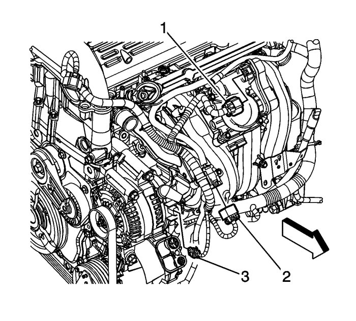
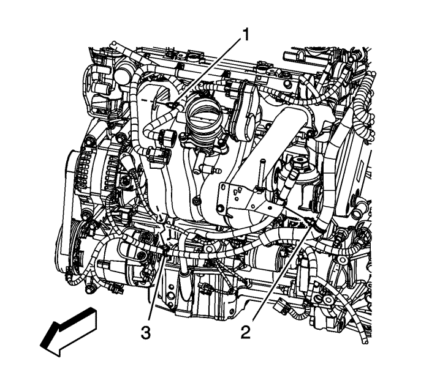
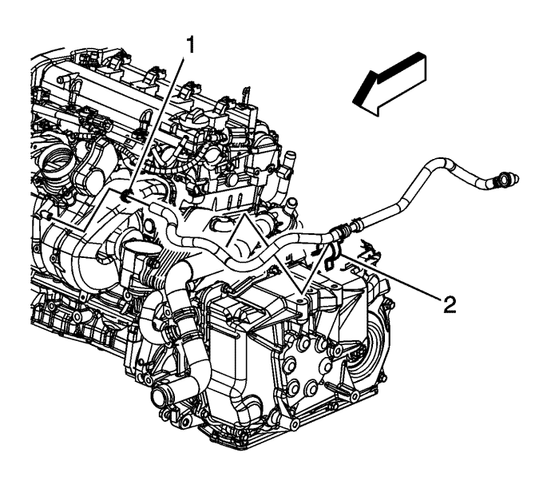
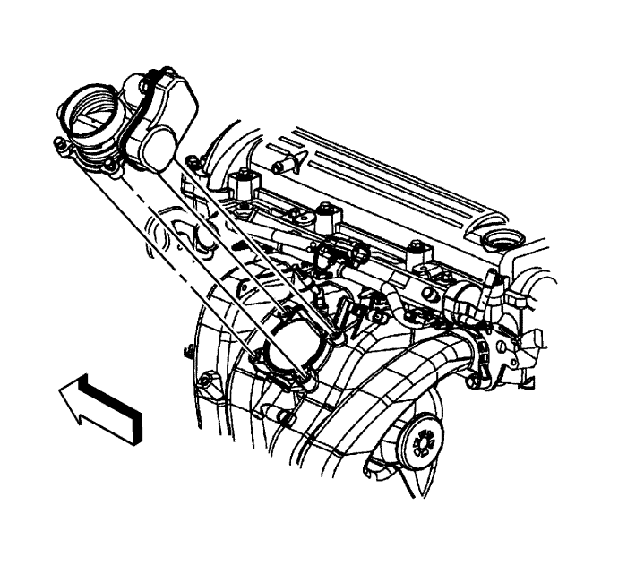
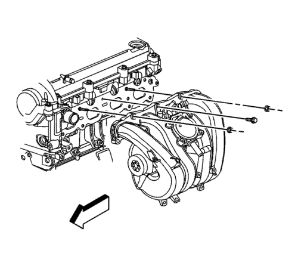

Sustitución del colector de admisión — LE5
Procedimiento de desmontaje

- Desmonte la cubierta del colector de admisión. Consultar Sustitución de la cubierta del colector de admisión .
- Retire el conducto de salida del purificador de aire. Consultar Sustitución del conducto de salida del filtro de aire : LE5 o LE9 .
- Desconecte el conector eléctrico del mazo de cables del motor (1) del control del actuador del acelerador (TAC).
- Desconecte el conector eléctrico del mazo de cables del motor (2) del mazo de cables del inyector de combustible.
- Desconecte el conector eléctrico del mazo de cables del motor del sensor de presión absoluta del colector (MAP).

- Desconecte los clips del mazo de cables del motor (1 y 3) del colector de admisión.
- Desconecte el clip del mazo de cables del motor (2) del tubo del indicador de nivel de aceite.
- Desconecte el clip del conector eléctrico del inyector de combustible del colector de admisión.

- Vuelva a colocar la abrazadera del tubo flexible de vacío del servofreno (1) en el colector de admisión.
- Desmonte la tubería flexible de vacío del servofreno del colector de admisión.

- Extraiga los tornillos del cuerpo del acelerador.
Nota: La junta del cuerpo del acelerador se puede reutilizar. Sustitúyala sólo si estuviera dañada.
- Retire el cuerpo del acelerador y la junta.
- Retire y compruebe la junta del cuerpo del acelerador.

- Desconecte el tubo de purga del recipiente de emisión de vapores (EVAP) del colector de entrada y el solenoide del EVAP. Consultar Reparación del cierre rápido con collar de plástico .
- Retire el tubo del indicador del nivel de aceite. Consultar Sustitución del tubo de la varilla de nivel de aceite .
- Desmonte el tubo de distribución del combustible. Consultar Sustitución del conjunto del tubo de distribución de los inyectores de combustible : LE5 o LE9 → LD9 .

- Desmonte los tornillos inferiores del colector de admisión.

- Quite el tornillo superior y las tuercas del colector de admisión.
- Desmonte el colector de admisión.
Nota: La junta del colector de admisión se puede reutilizar. Sustitúyala sólo si estuviera dañada.
- Desmonte y compruebe la junta del colector de admisión.
Procedimiento de montaje
- Monte una junta NUEVA del colector de admisión, si fuera necesario. De lo contrario, monte la vieja.
- Monte el colector de admisión.
- Monte el tornillo superior y las tuercas del colector de admisión.
Precaución: Consulte Precaución con las fijaciones en la sección Prólogo
- Monte los tornillos del colector de admisión y apriete hasta 10 N·m (89 lib. pulg.).
- Monte el tubo de distribución de combustible. Consultar Sustitución del conjunto del tubo de distribución de los inyectores de combustible : LE5 o LE9 → LD9 .
- Monte el tubo del indicador de nivel de aceite. Consultar Sustitución del tubo de la varilla de nivel de aceite .
- Conecte el tubo de purga del recipiente de EVAP al colector de admisión y el solenoide del EVAP. Consultar Reparación del cierre rápido con collar de plástico .
- Monte una junta NUEVA del cuerpo del acelerador, si fuera necesario. De lo contrario monte la vieja.
- Coloque el cuerpo del acelerador.
- Monte los tornillos del cuerpo de la mariposa y apriételos hasta 10 N·m (89 lib. pulg.).
- Monte la tubería flexible de vacío del servofreno en el colector de admisión.
- Coloque la abrazadera del tubo flexible de vacío del servofreno (2) en el colector de admisión.
- Conecte los clips del mazo de cables del motor (1 y 3) al colector de admisión.
- Conecte el clip del mazo de cables del motor (2) al tubo del indicador de nivel de aceite.
- Conecte el clip del conector eléctrico del inyector de combustible al colector de admisión.
- Conecte el conector eléctrico del mazo de cables del motor (2) al mazo de cables del inyector de combustible.
- Emborne el conector eléctrico del mazo de cables del motor con el sensor MAP.
- Emborne el conector eléctrico del mazo de cables del motor (1) con el sensor TAC.
- Monte el conducto de salida del filtro de aire. Consultar Sustitución del conducto de salida del filtro de aire : LE5 o LE9 .
- Monte la cubierta del colector de admisión . Consultar Sustitución de la cubierta del colector de admisión .
| © Copyright Chevrolet Europe. All rights reserved |